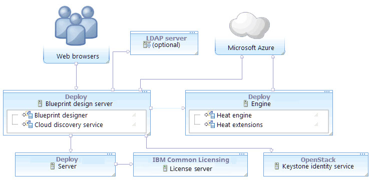

Connecting to Microsoft Azure
To connect to Microsoft™ Azure, you must provide Azure account information in a functional ID.
About this task

To connect to Microsoft™ Azure, you must provide Azure account information in a functional ID.
